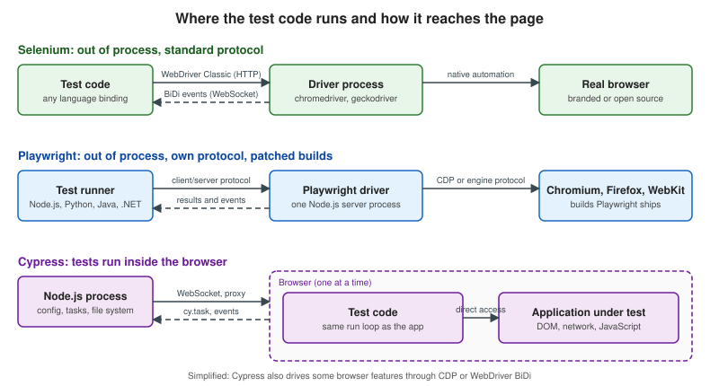

How Browser Automation Works
|
This content was generated with the assistance of AI and should be verified against the official documentation before being relied on in production. |
Every browser test tool has to answer one question: how does code that is not the web page make a real browser click, type and report what it sees? The answer decides how fast the tool is, which languages and browsers it supports, how it handles tabs, origins and frames, and how an AI agent can drive it. This page explains the three families of protocol — WebDriver Classic, WebDriver BiDi and the Chrome DevTools Protocol (CDP) — and the three architectures built on them: Selenium’s driver processes, Playwright’s client/server design with patched browser builds, and Cypress’s in-browser design. It absorbs the "Architecture" subsections of the page that this section replaces.
Versions were checked on 25 October 2026: Selenium 4.51, Playwright 1.64, Cypress 16.2, the W3C WebDriver Level 2 Working Draft of 2 July 2026 and the W3C WebDriver BiDi Working Draft of 8 October 2026. The low-level examples on this page were run against the Bookshelf app with Chrome 155 and chromedriver 155.

Three protocols
WebDriver Classic
W3C WebDriver is a remote control protocol: a small HTTP server, the driver
(chromedriver, geckodriver, msedgedriver, safaridriver), exposes a set of endpoints and the client library
(a Selenium language binding) calls them. Each command is one HTTP request with a JSON body and one JSON response:
create a session, navigate, find an element, click it, read a property, take a screenshot. The driver translates every
command into whatever private automation interface its browser offers and returns the result.
Characteristics that follow from this design:
-
Request and response only. The browser cannot tell the client that something happened. The client has to ask, which is why waits are polling loops (see Waits & Expected Conditions).
-
Language neutral. Anything that can send HTTP can drive a browser, which is why Selenium has bindings for Java, Python, C#, Ruby, JavaScript and Kotlin, and why other tools such as WebdriverIO and Appium reuse the protocol.
-
Vendor drivers. The driver ships with, or is maintained by, the browser vendor. Selenium Manager (bundled since Selenium 4.6) finds or downloads a driver that matches the installed browser, so tests rarely manage binaries by hand.
-
A standard. Because the endpoints are specified, the same command works against a local driver, against Selenium Grid and against a cloud provider’s hub.
The protocol can be exercised with nothing but curl. This session (against a locally started chromedriver --port=9515)
creates a headless Chrome, opens the catalogue, finds the "Next" link, clicks it and reads the URL:
# 1. create a session
curl -s -X POST localhost:9515/session -H 'content-type: application/json' \
-d '{"capabilities":{"alwaysMatch":{"browserName":"chrome","goog:chromeOptions":{"args":["--headless=new"]}}}}'
# {"value":{"capabilities":{ ... "browserVersion":"155.0.8059.85" ... },"sessionId":"<id>"}}
# 2. navigate
curl -s -X POST localhost:9515/session/$SID/url -H 'content-type: application/json' \
-d '{"url":"http://localhost:3000/books"}'
# {"value":null}
# 3. find an element: the response holds the W3C element reference
curl -s -X POST localhost:9515/session/$SID/element -H 'content-type: application/json' \
-d '{"using":"css selector","value":"[data-testid=page-next]"}'
# {"value":{"element-6066-11e4-a52e-4f735466cecf":"<element id>"}}
# 4. click it, then read the URL
curl -s -X POST localhost:9515/session/$SID/element/$EID/click -H 'content-type: application/json' -d '{}'
curl -s localhost:9515/session/$SID/url
# {"value":"http://localhost:3000/books?page=2"}
# 5. end the session
curl -s -X DELETE localhost:9515/session/$SIDThis run was executed locally; the $SID and $EID shell variables hold the identifiers returned by steps 1 and 3. A
Selenium call such as driver.findElement(By.cssSelector("...")) is a thin wrapper over step 3.
WebDriver BiDi
WebDriver BiDi keeps WebDriver’s standardisation and adds what Classic lacks: a WebSocket over which commands, responses and events flow in both directions. A script can subscribe to events and be notified of them instead of polling. The specification is organised in modules, each with commands and events:
| Module | What it covers |
|---|---|
|
Subscribing to and unsubscribing from events; session status. |
|
Tabs, windows and frames: |
|
Evaluating JavaScript in realms ( |
|
Observing requests and responses, intercepting and changing them, authentication challenges and data collectors. |
|
Console messages and JavaScript errors as events. |
|
Low-level pointer, key and wheel actions ( |
|
Cookies, user contexts (isolated profiles), device and locale emulation, and extension installation. Some commands arrive in the Working Draft before every browser implements them. |
Browsers implement the modules at different speeds; the specification is a Working Draft, so a command can exist in the document and not yet in a given browser release. Selenium’s documentation describes BiDi as the cross-browser successor to CDP for events such as network requests, console messages and JavaScript errors, and says it is moving its own implementation from Classic to BiDi while keeping backwards compatibility.
A BiDi session is requested with the webSocketUrl capability (Selenium sets it with options.enableBidi() in Java and
options.enable_bidi = True in Python). The script below speaks the protocol directly, with no Selenium library. It asks
chromedriver for a session with webSocketUrl: true, connects to the returned WebSocket, navigates, scrolls the link into
view, clicks it with input.performActions and evaluates location.href. It runs on Node.js 22 or later, which has a
global WebSocket:
const CD = 'http://localhost:9515'; // a running chromedriver
const post = (u, b) => fetch(u, { method: 'POST', headers: { 'content-type': 'application/json' }, body: JSON.stringify(b) }).then(r => r.json());
function rpc(url) {
return new Promise((resolve) => {
const ws = new WebSocket(url); let id = 0; const pending = new Map();
ws.onmessage = (m) => { const d = JSON.parse(m.data); if (d.id && pending.has(d.id)) { pending.get(d.id)(d); pending.delete(d.id); } };
ws.onopen = () => resolve({
send: (method, params = {}) => new Promise((r) => { const i = ++id; pending.set(i, r); ws.send(JSON.stringify({ id: i, method, params })); }),
close: () => ws.close(),
});
});
}
const session = await post(`${CD}/session`, { capabilities: { alwaysMatch: { browserName: 'chrome', webSocketUrl: true, 'goog:chromeOptions': { args: ['--headless=new'] } } } });
const bidi = await rpc(session.value.capabilities.webSocketUrl);
const ctx = (await bidi.send('browsingContext.getTree')).result.contexts[0].context;
await bidi.send('browsingContext.navigate', { context: ctx, url: 'http://localhost:3000/books', wait: 'complete' });
const found = await bidi.send('browsingContext.locateNodes', { context: ctx, locator: { type: 'css', value: '[data-testid=page-next]' } });
const node = found.result.nodes[0];
// BiDi input does not scroll for you, so bring the link into view first.
await bidi.send('script.callFunction', { functionDeclaration: 'el => el.scrollIntoView({ block: "center" })', arguments: [{ type: 'node', sharedId: node.sharedId }], target: { context: ctx }, awaitPromise: false });
await bidi.send('input.performActions', { context: ctx, actions: [{ type: 'pointer', id: 'm', actions: [
{ type: 'pointerMove', x: 0, y: 0, origin: { type: 'element', element: { sharedId: node.sharedId } } },
{ type: 'pointerDown', button: 0 }, { type: 'pointerUp', button: 0 },
] }] });
await new Promise((r) => setTimeout(r, 500));
const href = await bidi.send('script.evaluate', { expression: 'location.href', target: { context: ctx }, awaitPromise: false });
console.log(href.result.result.value); // http://localhost:3000/books?page=2
bidi.close();
await fetch(`${CD}/session/${session.value.sessionId}`, { method: 'DELETE' });The script was run and printed http://localhost:3000/books?page=2. Without the scrollIntoView call the click landed
outside the visible 800x600 viewport and the page did not navigate: a raw BiDi input action, unlike a WebDriver
Classic element click or a Playwright click, does not scroll the target into view for you. Higher-level libraries add that
convenience on top.
Chrome DevTools Protocol
The Chrome DevTools Protocol is what Chrome’s own developer tools
use to inspect and control the browser, exposed over a WebSocket when Chrome is started with --remote-debugging-port.
It is organised in domains (Page, DOM, Network, Runtime, Input, Emulation, Fetch, Tracing, and many more)
and is far richer than WebDriver: request interception, JavaScript coverage, performance traces, device emulation. It is
a Chromium protocol, not a standard; domains change between Chrome releases and other engines do not implement it (Firefox
dropped its CDP support in favour of BiDi). Selenium’s documentation lists CDP as the pre-BiDi way to reach those
features, and Selenium 4.51 for Java bundles CDP bindings for Chrome versions 153 to 155.
Reproducing the same click over CDP means finding the node, scrolling it into view, reading its box and sending mouse events:
// Chrome started with: chrome --headless=new --remote-debugging-port=9222 --user-data-dir=/tmp/cdp-profile about:blank
const base = 'http://localhost:9222';
const target = await (await fetch(`${base}/json/new?http://localhost:3000/books`, { method: 'PUT' })).json();
const ws = new WebSocket(target.webSocketDebuggerUrl); let id = 0; const waiting = new Map();
ws.onmessage = (m) => { const d = JSON.parse(m.data); if (d.id) waiting.get(d.id)?.(d); };
const send = (method, params = {}) => new Promise((r) => { const i = ++id; waiting.set(i, r); ws.send(JSON.stringify({ id: i, method, params })); });
await new Promise((r) => (ws.onopen = r));
await send('Page.enable');
await new Promise((r) => setTimeout(r, 1000)); // crude wait for load
const doc = await send('DOM.getDocument');
const link = await send('DOM.querySelector', { nodeId: doc.result.root.nodeId, selector: '[data-testid=page-next]' });
await send('DOM.scrollIntoViewIfNeeded', { nodeId: link.result.nodeId });
const box = (await send('DOM.getBoxModel', { nodeId: link.result.nodeId })).result.model.content;
const x = (box[0] + box[2]) / 2, y = (box[1] + box[5]) / 2;
for (const type of ['mousePressed', 'mouseReleased']) {
await send('Input.dispatchMouseEvent', { type, x, y, button: 'left', clickCount: 1 });
}
await new Promise((r) => setTimeout(r, 500));
console.log((await send('Runtime.evaluate', { expression: 'location.href' })).result.result.value);
ws.close();Source: Chrome DevTools Protocol viewer
The script ran against Chrome 155 and printed http://localhost:3000/books?page=2. Notice what it had to do by hand:
wait for the page to load, scroll, compute coordinates, send the mouse events. Every tool in this section does those steps
for you.
Playwright: client/server protocol and patched builds
Playwright is a library plus a driver: a Node.js server process that holds all the browser
logic. A test written in TypeScript, Python, Java or .NET is a client that sends commands (page.click, page.fill,
expect) to the driver over a pipe or WebSocket, using Playwright’s own JSON protocol. The driver then talks to the
browser. That is why the four language bindings behave identically: they are thin clients over the same driver.
The driver does not use WebDriver. For Chromium it uses CDP. For Firefox and WebKit it uses an engine protocol that the
Playwright team added to patched builds of those browsers. Playwright downloads its own build of each engine
(npx playwright install), pinned to the release: Playwright 1.64 pairs with Chromium 156, Firefox 157 and WebKit 27.2,
and is tested against Chrome 155 and Edge 155. Since Playwright 1.57 (1.63 on Linux arm64) the chromium browser is a Chrome for Testing build: headed mode uses
chrome and headless mode uses chrome-headless-shell. It runs ahead of the branded Chrome and Edge: when the world is
on Chrome N, Playwright already supports N+1. It can also drive an installed Google Chrome or Microsoft Edge through the channel option.
Consequences:
-
Pinned browsers. A test run is reproducible because the engine is part of the dependency. The price is a download of several hundred megabytes and the fact that "WebKit" is Playwright’s build, not Safari.
-
Browser contexts. The driver can create many isolated profiles (contexts) inside one browser process in milliseconds, which is the basis of Playwright’s cheap test isolation and parallelism.
-
Auto-waiting inside the driver. Actionability checks run next to the browser, which keeps the number of round trips low.
-
Rich features. Because it controls the engine, Playwright offers network interception, tracing, video, geolocation, permissions and clock control in every engine, not only in Chromium.
To see the protocol in action, a click on the catalogue’s search button was run with DEBUG=pw:protocol, which prints
every message the driver sends to Chromium (output trimmed to the interesting lines):
pw:protocol SEND ► {"id":41,"method":"DOM.scrollIntoViewIfNeeded","params":{"objectId":"..."}}
pw:protocol SEND ► {"id":42,"method":"DOM.getContentQuads","params":{"objectId":"..."}}
pw:protocol SEND ► {"id":45,"method":"Input.dispatchMouseEvent","params":{"type":"mouseMoved","x":553.67,"y":190.04}}
pw:protocol SEND ► {"id":46,"method":"Input.dispatchMouseEvent","params":{"type":"mousePressed","button":"left","x":553.67,"y":190.04,"clickCount":1}}
pw:protocol SEND ► {"id":47,"method":"Input.dispatchMouseEvent","params":{"type":"mouseReleased","button":"left","x":553.67,"y":190.04,"clickCount":1}}These are the same CDP messages as the hand-written script above, but Playwright first checked that the element was visible, stable and enabled, and it scrolled and computed the coordinates itself.
Cypress: inside the browser
Cypress inverts the architecture. The test code is bundled and loaded into the browser, runs in
the same run loop as the application, and calls the application’s DOM and JavaScript directly, with no serialisation
over a wire. Alongside it, a Node.js process owns the file system, the project configuration and the network proxy, and
talks to the browser over a WebSocket. Cypress’s own trade-offs page states the consequences plainly: test code is
evaluated in the browser and not in Node, so JavaScript and TypeScript are the only languages; Cypress commands run inside
a browser and cannot drive two browsers at the same time; each test is bound to a single superdomain unless cy.origin()
is used; and iframe support is limited, because same-origin frames can be queried natively while a "switch into an iframe"
command is still an open proposal. To reach the back end, tests use cy.request() and cy.task(), which runs code in
the Node process.
Cypress 16 changed how it reaches the network: on Chrome, Chromium and Edge, request interception uses the browser’s native network path instead of a proxy (see Network, Stubs, Spies & Clocks), so the diagram’s "proxy" label is the traditional path and the picture is deliberately simplified.
// Runs inside the browser, in the same JavaScript context family as the application.
it('reads application state directly', () => {
cy.visit('/books');
cy.window().then((win) => {
expect(win.document.querySelectorAll('[data-testid=book-card]')).to.have.length(6);
});
cy.task('log', 'this line runs in Node.js, not in the browser'); // needs a task registered in setupNodeEvents
});Source: Cypress: Why Cypress?, Cypress: Trade-offs
The cy.window() part of this example is the same style as the Cypress specs that were run against Bookshelf in this
section; the cy.task line is shown to illustrate the boundary and requires a task registered in the configuration
file’s setupNodeEvents, which this snippet does not show, so it was not run.
A click in each tool
The three sequence diagrams show what travels where when a test clicks the "Next" link.
Selenium (WebDriver Classic):
Playwright (client/server protocol):
Cypress (in-browser):
Consequences compared
| Question | Selenium | Playwright | Cypress |
|---|---|---|---|
Where does the test run? |
In your process, in any supported language, away from the browser. |
In your process, as a client of the driver, in four languages. |
Inside the browser, in JavaScript or TypeScript only. |
Speed |
Every command is an HTTP round trip to the driver; BiDi reduces polling for events. |
One socket to the driver; actionability runs next to the browser, so few round trips. |
No wire between test and page; fastest feedback while authoring. |
Multiple tabs and windows |
Native: switch window handles. |
Native: several pages and contexts in one test. |
One browser at a time; a plugin can help with tabs; limited by design. |
Cross-origin navigation |
Unrestricted. |
Unrestricted. |
Allowed with |
Frames |
|
Frame locators and |
Same-origin frames can be queried; cross-origin and "switch into frame" limited. |
Browsers |
Any browser with a WebDriver driver, including Safari and older versions. |
Chromium, Firefox and WebKit builds shipped with Playwright, plus branded Chrome and Edge. |
Chrome-family, Firefox and Electron; WebKit is experimental. |
Control of the engine |
What the driver and BiDi expose, plus CDP on Chromium. |
Deep, through the patched builds. |
Browser APIs plus what Cypress adds natively on Chrome-family browsers. |
Where AI agents plug in
An AI agent driving a browser needs two things: a view of the page and a way to act. All three protocols can supply both, and the section on AI Agents in the Browser builds on this page:
-
Accessibility tree snapshots. The browser’s accessibility tree is a compact, text description of what is on the page: roles, names, states and refs. Playwright MCP and CLI and Chrome DevTools MCP return it to the model and accept a ref back to act on. It is cheap and robust, and it is derived from the same DOM the protocols above expose.
-
Screenshots and coordinates. Computer-use tools send an image and receive pixel coordinates, which the harness turns into the same low-level mouse events as
Input.dispatchMouseEvent. It works on any page, including canvas, and costs more tokens. -
The Model Context Protocol (MCP). MCP, revision 2026-07-28 at the check date, is how a host application discovers the tools a browser server offers (
browser_navigate,browser_click,browser_snapshotin Playwright MCP). The MCP server is a process that holds a Playwright or CDP connection; the model never speaks CDP itself. -
Existing test runners. Playwright Test Agents and Selenium’s agent guidance use the same driver and locators as human written tests, which is why generated tests can be ordinary Playwright or Selenium code.
What changed recently
-
WebDriver BiDi reached a Working Draft of 8 October 2026 and is the standard path for events in new Selenium code; Selenium 4.51 added a BiDi code generator on the Java side.
-
Playwright 1.64 pairs with Chromium 156, Firefox 157 and WebKit 27.2. Python, Java and .NET bindings were exercised at 1.63 for the examples of this section.
-
Cypress 16 moved request interception to the browser’s native path on Chrome-family browsers and removed
Cypress.env(),cy.exec()andcy.end(). -
CDP in Selenium is still available, but the Selenium documentation points new work at BiDi.